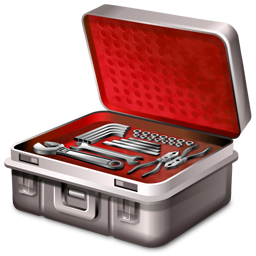
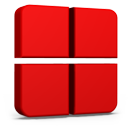
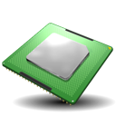

ROM-JACKET HELP DOCUMENTATION
Installation
Bypass/Continue
• This will allow you to install and configure 3rd party utilities. You may choose to install Daemon Tools and locate Xpadder, however these are optional and by choosing 'bypass' any 3rd party utilities found in default locations will be identified and if not, disabled. You may choose to install Daemon Tools and locate Xpadder after initial configuration.
Multi-Monitor
• If you're using a computer with multiple monitors, RoM-Jacket can be configured to disable additional monitors while roms are being played. Peripheral monitors are re-enabled when exiting
General Usage
| Rj_Configurator |
 |
This tool configures RoM-jacket. |
| RJ-Sort-Folder |
 |
This is the RJ-Sort-Folder where roms are sorted. |
| RJ-RJ-BIOS-Folder |
 |
This tool sorts bios-files. |
Three icons will appear on the desktop after installation: |
The following steps should be taken when adding any new consoles.
STEP 1: • Install emulators and drivers. You may choose from a list or auto-install the default and recommended ones.[video]
All recommended emulators can be downloaded & installed at once or individually. Many alternative emulators can also be downloaded and installed.
.
STEP 2:• Install the bios-files. RoM-Jacket recognizes many common bios-files.[video]
Bios files for your emulators may be added throught the configurator or dragged onto the "RJ-BIOS-Folder" to be added automatically.
STEP 3:• Copy roms into the RJ-Sort-Folder,[video]
You may also drag'n drop roms you wish to add to your library onto the "Rj-Configurator" icon on your desktop to update your library automatically.
STEP 4: • Use the RJ-Configurator to update and/or configure your library.[video]
Select a library or all libraries to update using the simple wizard.
STEP 5: • Download and install MetaData.
Unique & customized Full-HD Backgrounds, large, high-quality photographic icons & logos, and video previews are available for all supported consoles from RoM-Jacket's repositories.
STEP 6:• Select a frontend to auto-configure.
Autoconfigure a frontend to browser your library with. |
Emulators
• This menu will allow you to install or reinstall your emulators.
All
Selecting "ALL" will download and install the reccommended and supported emulators.
Emulators are downloaded to the installation folder's net directory: Defaults to:
C:\RJ\Romjacket\net\EmulatorName
Some
This menu item allows you to select a single emulator to install.
A wizard is provided to assist in choosing which emulator to install.
The Paradigm:
Roms in your library are automatically associated with emulators installed by Rom-Jacket to your Emulators folder. Alongside these emulators, Rom-Jacket uses "Helper" programs to assist in automating the launching of roms. Quick-saves, battery-saves and configuration-files for these emulators are stored in each rom's folder.
Depend
• This menu item allows you to select dependencies to install.
Daemon Tools
This menu allows you to configure the disk-mounting program "Daemon Tools"
Install
Installs Daemon Tools to a location of your choosing.
Enable/Disable
Enables and disables Daemon Tools globally.
Visual C++
Many emulators require these runtimes
DirectX
Installs and Updates DirectX libraries
Java JRE
Installs Java Runtime Libraries
BIOS
• This menu item will allow you to download and install bios files.
File/Archive
This menu allows you to select a file or archive containing bios files.
Files and archives may also be added by dragging and dropping the file or archive onto the "RJ-BIOS-Folder" icon located on your desktop.
List
This menu allows you to select a community list containing links to bios files and archives.
Files provided by lists will be downloaded to your RJ-RJ-BIOS-Folder.
Torrent
This menu allows you to provide a torrent file.
Files provided by a torrent will be downloaded to your RJ-RJ-BIOS-Folder.
URL
This menu allows you to provide a URL You can specify a torrent, magnet, ftp or http url.
Files will be downloaded to your RJ-RJ-BIOS-Folder.
The Paradigm:
Recognized bios files found are copied into RoM-Jacket's"RJ-BIOS-Folder" and then injected into thier corresponding emulator's RJ-BIOS-Folders. Archives are exploded into the "RJ-BIOS-Folder."
Caveats:
This must be done prior to configuring any console which uses an emulator requiring a bios and any console configured prior to the addition of bios files must be reconfigured with new launchers.
Joystick
• Drivers are downloaded and installed from this menu.
Xpadder
• This menu selects profile types for existing consoles.
Initialize
• This menu selects profile types for existing consoles.
Default
These profiles are designed to be used with emulators in their default state. Each button and emulator functionality are mapped.
Blank
These profiles are completely blank. This is usefull for users who wish to use global emulator configurations but want to use their joystick to control a frontend.
Emu
These profiles contain mappings for emulator functionality (save/load profile, reset emulator, save snapshot) only.
Re/Configure
• Creates or recreates profiles for each game.
Toggle
This is the global toggle for xpadder. In addition to the profiles for games, a profile is also created to control your frontend. This creates special considerations when disabling xpadder on a per-game and per-console level.
The Paradigm:
Xpadder is not provided by RoM-Jacket. It's $10 and worth every penny. RoM-Jacket's Xpadder profiles have been designed for the XBOX 360 Joystick, however many joysticks seem to work well them.
Caveats:
Setup for MotionInJoy and x360ce utilities are left to the user.
Drivers
• Drivers are downloaded and installed from this menu.
360
This installs the XBox 360 Joystick drivers from Microsoft.
PS3
This installs the MotionInJoy driver for Sony PS3 Sixaxis joysticks. MotionInJoy users should use the "XBOX 360 Controller Emulator" option for best results.
Emulate
This installs the x360ce driver.
Note
this will only work for Games for Windows supporting the XBox 360 driver.
Download
• This menu has downloading options for RoM-Jacket. All files are downloaded to the RoM-Jacket folder.
List
Lists compiled by various communities on the web are stored as .set files. These files contain links to files, torrents and magnets.
File
RoM-Jacket can download files using a .torrent file.
URL
You can enter the url of a .torrent, magnet link or any other file.
SORT
• This menu item is used to add roms from your "RoM-Jacket" folder to your library.
Rom Identification
• Roms containing extensions exclusive to a console or emulator are automatically sorted.
• Identified roms found within archives such as .zip, .rar or .7z are extracted into the appropriate console folder and the archive is moved into the "SORTED ARCHIVES" directory inside the RJ-Sort-Folder.
• Use the wizard to assign and move them, or open the folder to use the GUI to drag them to the appropriate console's folder to assign them.
Select
• This menu allows the user to configure games and consoles.
Folder Generation
Consolidate vs. Individuate
Consolidate:
This will consolidate roms containing the same base-name and will group "duplicate" roms and multi-disc roms together. Effectively, this will help eliminate the need to scroll through many different versions of games in a library and will help wrangle multi-disc games. This is the preferred method of folder-generation for users wishing to tame their library and generate friendly-names for their frontend.
Example:
..\Games\Console\Super System\Super Fun Game\
Super Fun Game (Disk 1).rom
Super Fun Game (Disk 2).rom
Example:
..\Games\Console\Super Fun System\Interesting Game\
Interesting Game [ver 1a].zip
Interesting Game (Game Developers).zip
Interesting Game [!] (1992).zip
Individuate:
This will simply give a folder to each rom found. This is the preferrable method of folder-generation for users wishing to configure the Hyperspin Frontend using proprietary xml tools.
Example:
..\Games\Console\Super System\Super Fun Game (Disk 1)\
..\Games\Console\Super System\Super Fun Game (Disk 2)\
Super Fun Game (Disk 2).rom
Example:
..\Games\Console\Super Fun System\Interesting Game [ver 1a].\
Interesting Game [ver 1a].zip
..\Games\Console\Super Fun System\Interesting Game (Developer Name)\
Interesting Game (Game Developers).zip
..\Games\Console\Super Fun System\Interesting Game [!] (1992)\
Interesting Game [!] (1992).zip
Launcher Configuration
Per-Game vs. Global
Options for the console or game such as disabling extended monitors, Xpadder, JoyToKey, Daemon Tools and "per-game" settings are set prior to launcher-confuration.
PER-GAME
Each rom uses a unique configuration file for its emulator.
Paradigm:
All settings, quick-saves, save-files & snapshots for the emulator are saved in the rom-directory.
Caveats:
Some consoles use the same emulator and these consoles should use either Per-Game or Global settings (not both).
E.G: Sega Genesis & Sega Master System both use the Kega Fusion Emulator.
Nintendo Gameboy & Nintendo Gameboy Color both use the Mednafen Emulator.
GLOBAL
All games using the assigned emulator use the same configuration file.
Paradigm:
All settings, quick-saves, save-files & snapshots for the emulator are saved in locations set by the emulator in its default state and any changes made to emulator settings will propogate for all games using the emulator.
Per-Profile
When Xpadder is disabled, this menu will not appear.
Sometimes you may want to xpadder enabled to control your frontend, but disabled or load profiles that control an emulator's special functionality only when loading a rom or console.
Default
will create the default profiles for the game/console.
These profiles contain the default keyboard mappings as they correspond to the native joystick layout for the emulator.
Blank
causes an empty profile to be created for this instance so that upon quitting an emulator, the profie used to control your frontend is then reloaded.
This is desirable for users who are processing a console with a custom emulator.
Emu
causes a profile with the default associated Emulator's functionality to be created.
This is desirable for users who are not using per-game/console configurations AND are using directinput/xinput mappings but may want a profile to control emulator functions such as reset, save/load state etc...
Custom Consoles & Emulators
• If you wish to use a different emulator for a console or have a console not identified by RoM-Jacket, a simple gui wizard is provided to assist in creating proper command-line instructions.
Run from Emulator Directory
Most emulators should not use this option, however some emulators require that the emulator be called from its directory An example of how the launcher works with this option ON:
..\Rom Name>cd C:\Emulators\Emulator"
..\Emulator>Emulator.exe" "C:\Games\Console\Console Name\Rom Name\Rom Name.ext"
Full-Path/ROM
Most often, emulators require the full path of the rom including the extension when launching a rom:
"\..\Emulator.exe" -option "C:\Games\Console\Custom Console Name\Rom Name\Rom.ext"
Emulators often use simply the name of the file without the path extension included when launching. In this case use "ROM".
"..\Emulator.exe" -option RomName
Extensions
By selecting yes with the "ROM" option you can change the command to:
"..\Emulator.exe" -option "RomName.ext"
Config Files
Enter the name of the emulator's configuration file. Wildcards and paths are accepted.
If the configuration file is stored in the same folder as the emulator's executable, RoM-Jacket will copy it to each rom's folder upon exit allowing you to retain the settings on a per-rom basis.
Users may enter a path, however it should be noted that custom RoM-Jacket launchers will not create folders
Options/Arguments
The custom emulator and console-template use a very basic structure that let you specify how a rom is launched:
"...CustomPath\CustomEmulator.exe" options "ROM" arguments
Options are given after the emulator and before the ROM. Arguments are given after the ROM. The switches are emulator specific. Consult your emulator's help/manual..
The Paradigm:
"Processing"
After roms have been sorted they must be "processed". Rom-Jacket will create a launcher, emulator-configuration file/s, and joystick profiles for each rom in your library. This processing may take several minutes depending on the size of your library. *mame, Atomiswave, Naomi, and many Sega Genesis, PCEngine/TurboGrafx 16/SuperGrafx and CPS-I/II/III games will be assigned nice names for your convienence.*
Launchers
Generally, launchers follow this procedure:
1. Defines the locations.
2. Overwrites the emulator's configuraion files with the rom's configurations.
3. Loads the rom's joystick profiles.
4. Defines the rom.
5. Launches the emulator against the rom and waits until the emulator exits.
If you are launching through a RJ-Enabled Frontend:
The Frontend will minimize and pause until the rom has exited and then unpause and restore itself.
6. Copies the configuration files back to the rom's directory.
7. Reloads the joystick profile for the frontend.
8. Terminates the launcher.
Caveats:
Large Libraries may take a LONG time to process.
Migrate
• The following options provide ways to migrate existing libraries and configurations into your library.
Archive
This menu allows you to select a single archive to explode into your RJ-Sort-Folder.
Folder
This menu allows you to select a folder (which may contain archives) to explode into your RJ-Sort-Folder.
Library
This menu allows you to select an existing library and add its items to yours. RoM-Jacket guesses based on the selected library's console's names. Select the folder containing the console directories.
Config
This menu allows you to propagate a single file such as an emulator configuration file or XPadder profile throughout an entire console's library. Any file can be copied and subdirectories (eg: ".Mem") are supported.
Execute
This menu allows you to select a rom to transform into a portable executbale. The rom, any additional files specified by the user, emulator files and special configuration files are compiled and saved to the desktop or a location of your designation. If boxartwork is found, it will be used as the icon for the executable and shortcut it creates.
MediaBrowser
If it is not detected, this menu will prompt you to install the MediaBrowser application.
Install_MB
This will install MediaBrowser for Windows Media Center.
Install_GB
This will install the GameBrowser plugin for MediaBrowser. This can and should also be done via the MediaBrowser configurator.
Config_MB
This will configure Media Browser for use with your library.
Config_GB
This will configure the Game Browser plug in for use with your library.
The Paradigm:
RoM-Jacket uses the library structure and filename conventions inherent to Media Browser and Gamebrowser.
Caveats:
Mediabrowser without Gamebrowser installed will attempt to scrape undesirable artwork and metadata. Users who do not wish to use Gamebrowser (it is NOT FREE) should disable metadata scraping/saving in the Mediabrowser configurator to prevent Mediabrowser from displaying inaccurate artwork and metadata.
XBMC
If it is not detected, this menu will prompt you to install the XBMC application.
Rom Collection Browser
The Rom Collection Browser plugin will attempt to scrape data upon opening XBMC. All scraped data is stored locally inside individual rom folders in a format prepared for use in Advanced Launcher and Mediabrowser/Gamebrowser.
Advanced Launcher
The Advanced Launcher plugin scrapes metadata and artwork to individual rom folders, however in order for scraped artwork to be visible in Mediabrowser/Gamebrowser or Rom Collection Browser, you must reconfigure after scraping new data.
Cabrio
If it is not detected, this menu will prompt you to install the Cabrio-FE application. The Cabrio-FE application is an opensource frontend similar to Hyperspin. It is lightweight, fast and suitable for a small number of games (less than 1000) and/or a slower machine. Rom-Jacket will scan your RoM-Jacket library and configure Cabrio using artwork such as backdrops, boxart, screenshots and even videos.
Some
Will allow you to select which system to add to your setup.
All
Will add all systems to your setup.
Theme
This will install RoM-Jacket theme..
The Paradigm:
This frontend is designed for a static library. Cabrio must be completely reconfigured to populate newly added games.
Caveats:
Configuration for a large library may be extremely time-consuming.
OblyTile
Windows 8 users can make use of this utility to use the metro ui as a frontend.
Hyperspin/Local
You can choose to use boxart from your RomJacket Libraries or Hyperspin installation.
Caveats:
It is highly recommended that Icons be downloaded and installed prior to configuring OblyTile. If boxart is not found for a game, RomJacket will assign its corresponding console's Icon file to the tile.
Hyperspin
This allows you to chose between Hyperspin Configuration or Migration. Upon selecting this menu, you will be prompted to either locate your Hyperspin installation, reset and choose another location if you have already chosen one, download Hyperspin, or continue with the configuration.
GENERAL USAGE
Follow these steps to create a Hyperspin setup.
1. Re/Install: Hyperspin.
2. Create Mirrors: for your consoles.
3. Transfer: artwork & videos To Hyperspin
4. Configure:Generate Themes
Install/reinstall
This will prompt you to install, reinstall or locate Hyperspin to a location of your choice.
Mirror
This will create a shortcut file for each launcher for selected consoles. A mirror of the console's directory is created in the "Games" folder called "Hyperspin".
e.g.: "...\Games\Hyperspin\Console Name\RomName.lnk"
Config
This will allow you to create xml files, themes, in-console themes and game themes.
XMLs
Will generate XML files for selected consoles containing only the roms you have.
Console
Will generate a theme for selected consoles in Hyperspin's Main Menu using backdrops, icons/banners and videos downloaded with Rom-Jacket.
In-Console
Will generate a theme for selected consoles in Hyperspin's selected console using backdrops, icons/banners downloaded with Rom-Jacket
Games
WIll generate a theme for games in a selected console. RoM-Jacket uses any Folder.jpg/.png, Backdrop.jpg/.png and video-previews found in the existing library's game folders and any artwork already in the Hyperspin setup.
All
Will generate XMLs, console themes, in-console themes and game-themes for all consoles in your library.
Transfer
This will allow you to transfer Media to or from a Hyperspin Installation.
To
This will transfer Artwork from your Rom-Jacket Library to your Hyperspin Installation.
Boxart
This will migrate Folder artwork.
This will allow you to search for any copy box-cover images for any or all consoles. These will be copied, converted, resized and renamed in the "Hyperspin\Media\*Console*\Images\Wheel" folder.
Backdrop
This will migrate banner artwork.
This will allow you to search for and copy Backgrounds for any or all consoles. These will be copied, converted, resized and renamed into the "Hyperspin\Media\*Console*\Images\Backgrounds" folder.
Video
This will migrate videos.
This will allow you to search for and copy videos in your RoM-Jacket Library for any or all consoles. Videos will be copied to "Hyperspin\Media\*Console*\Video"
All
This will migrate all boxart, banners and videos found.
This option will allow you to copy all artwork and videos found for and and all consoles in your RoM-Jacket Library .
From
This menu provides migration options for Hyperspin artwork.
Boxart
This will migrate Folder artwork.
This will allow you to search for any copy box-cover images for any or all consoles. These will be moved and renamed to the rom's folder and renamed "Folder.png"
Banner
This will migrate banner artwork.
This will allow you to search for and copy wheel images for any or all consoles. These will be moved and renamed "Banner.png"
Video
This will migrate videos.
This will allow you to search for and copy videos for any or all consoles.
All
This will migrate all boxart, banners and videos found.
This option will allow you to copy all artwork and videos found for all consoles.
The Paradigm:
RoM-Jacket searches for and attempts to match the "base-name" of existing roms in you rom-jacket library. Parenthesis and brackets after the name of the rom ( [ ] ) are ignored.
Caveats:
Existing images and videos will be overwritten. Folder artwork must be in the "..Media\Images\Artwork2" folder. Wheel art must be in the "..\Media\Wheels" folder and videos must be in the "..\Media\Videos" folder.
MetaData
Download, install and convert artwork, icons, logos, videos and full-hd backgrounds for your Frontend.
Download/Install
This menu will show the download status of banners, backdrops, icons and the number of videos.
Icons
High quality photographic icons in PNG format are ready to be downloaded and used by your frontend.
Backdrops
RoM-Jacket's repository includes Full HD background images for over 80 consoles.
Banners
RoM-Jacket's repository includes high quality custom Banners/Wheel art in PNG format.
Video
This will bring up a menu that will allow you to download all videos for your existing consoles, or select from a list which console-video to download.
Videos are downloaded to a hidden folder "backdrops" in the root of the console's directory with a corresponding filename in flash video format (FLV), or MP4.
These videos can be used by Mediabrowser/Gamebrowser, Cabrio-FE and Hyperspin.
Convert
This will rename artwork scraped by Advanced Launcher to the standard naming convention.
e.g.: ...\Console Name\Game Name\Game Name_Boxart.jpg >>...\Console Name\Game Name\Folder.jpg
...\Console Name\Game Name\Game Name_Fanart.jpg >>...\Console Name\Game Name\Backdrop.jpg
The Paradigm:
Information and artwork collected (scraped) by front-ends is reprocessed by RoM-Jacket in order that it may be shared across them. All data is stored in the corresponding rom's folder. Each time you add roms and scrape metadata or collect artwork the front-ends should be reconfigured to allow the data to populate properly.
Caveats:
Videos are approximately 10mb each. Downloading all videos for all supported consoles can exceed 600mb.
If you have previously installed a supported front-end, the existing configuration files are backed up as renamed files (*.sbak and *.orig).
***Existing metadata for consoles in your library is overwritten.***
COMPUTER SYSTEMS
Defaults to BeebEM.
Accepts:
.ssd
.dsd
.img
.uef
Defaults to ElecEM.
Accepts:
.ssd
.dsd
Defaults to FS-UAE. Requires Kickstarts.
Accepts:
.adf
.ipf
Defaults to AppleWin.
Accepts:
.bin
.dsk
.zip
.nib
.iie
.do
.po
.gz
.2img
.2mg
Defaults to KEGS32. Requires BIOS files.
Accepts:
.dsk
.po
.2mg
Defaults to WinAPE.
Accepts:
.dsc
.dsk
.arc
.cpr
.crt
.cdt
.czx
.voc
Defaults to Steem. Requires a BIOS file.
Accepts:
.st
.msa
.zip
.ipf
Defaults to Altirra. Requires BIOS files.
Accepts:
.atr
.atx
.atz
.bas
.pro
.xfd
.dcm
.cas
.bin
.rom
.xex
.obx
.com
.gz
.zip
Defaults to WinVICE.
Accepts:
.x64
.t64
.d64
.g64
.fdi
.p00
.prg
.tap
Sinclair ZX Spectrum
Defaults to ZXSpin.
Accepts:
.z80
.tzx
.sna
.szx
.tap
.blk
.csw
.dsk
.scr
.wav
.rom
.hdf
.zip
Defaults to BlueMSX.
Accepts:
.dsk
.mx1
.mx2
.rom
.ri
.sc
.zip
.di1
.di2
.360
.720
.sf7
.cas
Defaults to XM6 via a Helper-Applicaion. Requires BIOS files.
Accepts:
.d88
.d68
.88d
.hdf
.xdf
.hdm
.dup
.dim
.2hd
.hds
.2dd
.2hq
.img
Defaults to UNZ via a Helper-Applicaion. Uses Daemon Tools. Requires BIOS files.
Accepts:
.cue
.bin
.iso
.img
.nrg
.mdf
Defaults to Neko. Requires BIOS files.
Accepts:
.d88
.d98
.xdf
.hdm
.dup
.fdi
.2hd
.nhd
.thd
Defaults to XM7. Requires BIOS files.
Accepts:
.d77
.t77
.2d
.2dd
.vfd
Windows Games
Defaults to Windows via a Helper-Applicaion. Uses pre-existing shortcuts created by the actual game-installers.
Accepts:
.lnk
Flash Games
Defaults to FlashPlayer via a Helper-Application.
Accepts:
.swf
HOME CONSOLES
Defaults to 4DO. Requires a BIOS file.
Accepts:
.iso
.bin
.cue
.nrg
.mdf
.cdi
Defaults to Mednafen. Requires a BIOS file.
Accepts:
.cue
.iso
.img
.nrg
.bin
.mdf
Defaults to FS-UAE.
Requires Kickstart and extended BIOS file.
Accepts:
.iso
.cue
.bin
.img
.cdi
.mdf
Sam Coupe
Defaults to SimCoupe.
Accepts:
.gz
.dsk
.sad
.mgt
.sdf
.td0
.sbt
.cbm
.zip
Defaults to WinArcadia.
Accepts:
.zip
.bin
.pgm
Defaults to Stella.
Accepts:
.z26
.a26
.zip
.bin
.rom
Defaults to Atari++. Requires BIOS files.
Accepts:
.a52
.bin
.rom
Defaults to ProSystem.
Accepts:
.a78
.bin
.zip
.rom
Defaults to Project Tempest via a Helper-Application.
Accepts:
.jag
.j64
Defaults to Project Tempest via a Helper-Application.
Accepts:
.iso
.cdi
.bin
.img
.nrg
.mdf
Defaultst to BlueMSX.
Accepts:
.col
.rom
Defaults to Nostalgia. Requires BIOS files.
Accepts:
.bin
.int
.zip
Defaults to WCDI.
Accepts:
.cdi
.iso
.nrg
.mdf
.img
Defaults to Project 64.
Accepts:
.n64
.zip
.usa
.pal
.*64
Defaults to Dolphin. Many games will require customized settings.
Accepts:
.iso
.wfbs
.dol
.wad
.wia
Defaults to Dolphin. Many games will require customized settings.
Accepts:
.iso
.gcm
Defaults to Mednafen. Some games require BIOS file.
HOLD Back
press L_Bumper to eject DISK
press R_Bumper to load DISK
Accepts:
.fam
.zip
.fdi
.fam
.fds
Defaults to Mednafen.
Accepts:
.nes
.unf
.zip
Defaults to Mednafen.
Accepts:
.vb
.vboy
.zip
Defaults to Final Burn Alpha. Requires a BIOS file.
Accepts:
.iso
.cue
Defaults to Kega Fusion.
Accepts:
.md
.smd
.zip
.gen
.bin
Defaults to Kega Fusion
Accepts:
.sg
.zip
Defaults to Kega Fusion.
Accepts:
.sms
.bin
.zip
Defaults to NullDC. Requires BIOS files.
Accepts:
.iso
.cdi
.gdi
Defaults to SSF. Uses Daemon Tools. Requires BIOS files.
Accepts:
.iso
.cue
.mdf
.nrg
.img
.cdi
.bin
Defaults to Kega Fusion. Requires BIOS files.
Accepts:
.bin
.iso
.cue
.img
.cdi
Defaults to Kega Fusion.
Requires BIOS files.
Accepts:
.32X
.X32
.bin
.gen
.rom
.zip
Defaults to PSXfin.
Requires a BIOS file.
Accepts:
.img
.cdi
.iso
.cue
.bin
.cdz
.nrg
.mdf
Defaults to PCSX2.
Requires a BIOS file. Many games will require customized settings.
Accepts:
.img
.cdi
.iso
.cue
.bin
Defaults to ZSNES.
Accepts:
.smc
.zip
Defaults to ZSNES.
Accepts:
.sfc
.zip
Defaults to Mednafen.
Accepts:
.pce
.zip
Defaults to Mednafen.
Accepts:
.sgx
.zip
Defaults to Mednafen.
Accepts:
.pce
.zip
Defaults to Mednafen. Requires a BIOS file.
Accepts:
.iso
.img
.cdi
.nrg
.mdf
Defaults to Mednafen. Requires a BIOS file.
Accepts:
.iso
.img
.cdi
.nrg
.mdf
Defaults to ParaJVE.
Accepts:
.bin
.vec
.zip
ARCADE SYSTEMS
Arcade
Defaults to MAME. If you have an arcade library (MAME roms) you can opt to remove bootlegs, clones and duplicates from displaying in your frontend. All roms are placed in a hidden directory within the "Arcade" folder called SOURCE. The roms are identified and a launcher is created inside each game's properly listed name.
Accepts:
.zip
CPS (Capcom Play System)
Defaults to Final Burn Alpha. Though these roms use the same naming convention as MAME games, each game must contain all roms required. The roms are identified and a launcher is created inside each game's properly listed name.
Accepts:
.zip
CPS II
Defaults to Final Burn Alpha. Though these roms use the same naming convention as MAME games, each game must contain all roms required. The roms are identified and a launcher is created inside each game's properly listed name.
Accepts:
.zip
CPS III
Defaults to Final Burn Alpha. These are not the CHD roms used by MAME. Also, though these roms use the same naming convention as MAME games, each game must contain all roms required. The roms are identified and a launcher is created inside each game's properly listed name.
Accepts:
.zip
Defaults to Final Burn Alpha. Though these roms use the same naming convention as MAME games, each game must contain all roms required. Requires a BIOS file. The roms are identified and a launcher is created inside each game's properly listed name.
Accepts:
.zip
Sega Model 2
Defaults to m2emulator. All roms are placed in a hidden directory within the "Sega Model 2" folder called SOURCE. The roms are identified and a launcher is created inside each game's properly listed name.
Accepts:
.zip
Sega Model 3
Defaults to Supermodel. All roms are placed in a hidden directory within the "Sega Model 3" folder called SOURCE. The roms are identified and a launcher is created inside each game's properly listed name.
Accepts:
.zip
Sega Naomi
Defaults to Demul via a Helper-Applicaion. Requires BIOS files. All roms are placed in a hidden directory within the The roms are identified and a launcher is created inside each game's properly listed name.
Accepts:
.gdi
.dat
.zip
Atomiswave
Defaults to Demul via a Helper-Applicaion.
Requires BIOS files. The roms are identified and a launcher is created inside each game's properly listed name.
Accepts:
.zip
Taito Type X2
Defaults to ArcadePCLoader. These games are complete Windows applications and each has a corresponding (short name) folder inside ArcadePCLoader's "Games" directory. RoM-Jacket will create shortcuts to the executables created by ArcadePCLoader.
Common romsets (archives) are extracted and then the archives are moved into a hidden folder "..\Taito Type X\SOURCE\EXTRACTED"
Accepts:
.lnk
HANDHELD SYSTEMS
Defaults to Mednafen.
Accepts:
.zip
.bws
.ws
Defaults to Mednafen.
Accepts:
.zip
.ws
.wsc
Defaults to Mednafen. Requires a BIOS file.
Accepts:
.zip
.lnx
Defaults to Mednafen.
Accepts:
.zip
.ngp
.npk
.neo
Defaults to Mednafen.
Accepts:
.ngc
.zip
.neo
Defaults to No$GBA via a Helper-Application. Some games require a BIOS file.
Accepts:
.nds
.nd5
Defaults to Mednafen.
Accepts:
.zip
.gb
Defaults to Mednafen.
Accepts:
.gbc
.zip
Defaults to VisualboyAdvance-M. Some games require BIOS file.
Accepts:
.zip
.gba
Defaults to Kega Fusion.
Accepts:
.gg
.zip
.bin
Defaults to JPCSP. Many games will require customized settings.
Accepts:
.iso
.cso
.jso
Joy Mapping
RoM-Jacket attempts to create configurations that correspond to the emulated console's native controller or joystick using the default keyboard assignments for the emulator. Computer systems may have custom keyboards so configuarations may vary, however RoM-Jacket is preconfigured with common keyboard keys used for many games. |
Universal functions of emulators use the same button combination. |

|
POWER-OFF / EXIT: HOLD Back, HOLD L_Trigger, then HOLD R_Stick_Button
RESET / RESTART:HOLD Back, HOLD L_Trigger, then HOLD L_Stick_Button
SAVE /
LOAD STATE: HOLD Back then press D-Pad UP / DOWN to select a slot press D-Pad LEFT to save a state press D-Pad RIGHT to load a state
CAPTURE IMAGE: HOLD Back, press R_Trigger
REWIND: Press L_Thumbstick_Button to enable then HOLD L_Trigger to Rewind
SPEED CONTROL: HOLD Back then HOLD R_Stick RIGHT to Fast Forward or HOLD R_Stick LEFT to Slow |
Q: Where can I get games?
A: What the fuck is the internet?
Q: Can I use my own emulators?
A: You can try copying your emulators and configurations into RoM-Jacket's "Emulators" folders and milage may vary using the "custom emulators" function. It is reccommended to use the emulators available from within RoM-Jacket.
Q: I'm having problems with a feature. How can I contact you?
A: You can find providing support here, here or even here.
Q:I need to donate. Can you help me?
A: I provide donation support through Pay-Pal. You can donate to the RoM-Jacket cause here.
{kind=link}
{kind=link}
{kind=link}
{kind=link}
{kind=link}
{kind=link}
{kind=link}
{kind=link}
{kind=link}
{kind=link}
{kind=link}
{kind=link}
{kind=link}
{kind=link}
{kind=link}
{kind=link}
{kind=link}
{kind=link}
{kind=link}
{kind=link}
{kind=link}
{kind=link}
{kind=link}
{kind=link}
{kind=link}
{kind=link}
{kind=link}
{kind=link}
{kind=link}
{kind=link}
{kind=link}
{kind=link}
{kind=link}
{kind=link}
{kind=link}
{kind=link}
{kind=link}
{kind=link}
{kind=link}
{kind=link}
{kind=link}
{kind=link}